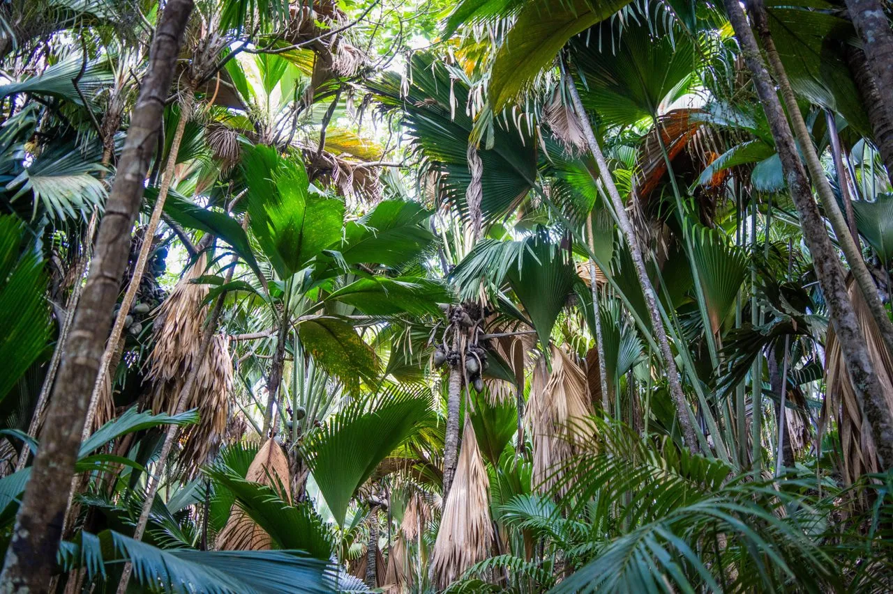
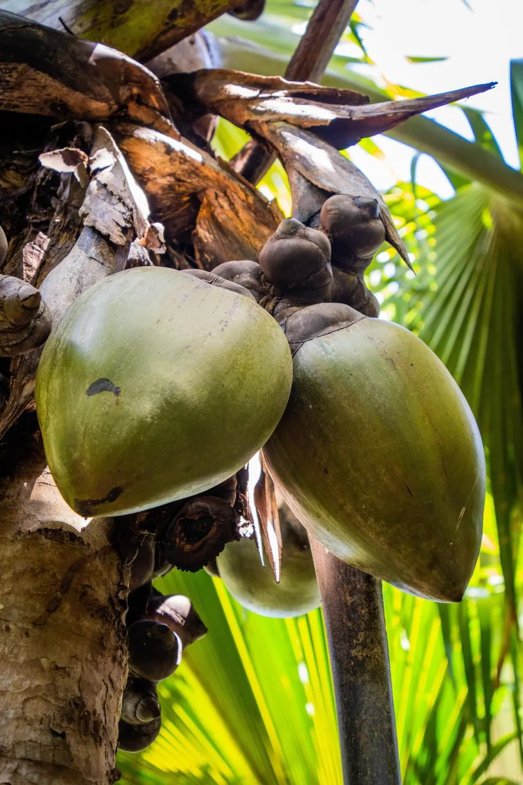

Exploring the Botanical Wonders of the Coco de Mer

The Coco de Mer (Lodoicea maldivica), a true marvel of nature, is one of the most unique and awe-inspiring plants on Earth. Endemic to the Seychelles archipelago, this remarkable palm is famous not only for its extraordinary size but also for its fascinating ecological role. With its striking appearance and complex life cycle, the Coco de Mer is a botanical gem that has captured the attention of scientists and nature lovers alike.
A Unique Palm in the Heart of the Seychelles
The Coco de Mer stands alone in its genus, Lodoicea, making it a one-of-a-kind species. Found only in the Seychelles, specifically on the islands of Praslin and Curieuse, this palm thrives in coastal forests. The environment here, with its humid climate and granite-rich soils, provides the perfect conditions for the Coco de Mer to grow and flourish.

Its distinctive features—from towering trunks to enormous fan-shaped leaves—make it impossible to ignore. But beyond its physical grandeur, the Coco de Mer also plays an important ecological role in these forests, supporting the surrounding ecosystem.
A Closer Look at the Coco de Mer’s Features
- Tall and Majestic: The Coco de Mer palm can grow up to 30 meters tall, with a trunk that is unbranched and strong. Its leaf scars mark its growth, and its massive fan-shaped fronds stretch up to 10 meters long. These leaves create a canopy that’s not just beautiful but essential for the forest’s habitat.
- Roots That Anchor Life: Beneath the ground, the Coco de Mer has a fibrous root system that keeps it stable, even in the nutrient-poor soils where it grows. This root system also helps capture nutrients, which is crucial for supporting the tree’s massive size.
A Fascinating Reproductive Cycle
The Coco de Mer is a dioecious plant, meaning it has separate male and female trees. The reproductive process is as unique as the plant itself:
- Male Trees: These produce long, fragrant inflorescences that resemble catkins. These flowers emit a strong scent that attracts pollinators, including bees, flies, and even geckos.
- Female Trees: When pollinated, the female trees develop the world’s largest seeds, which can weigh up to 25 kilograms. The double-lobed shape of the seed, resembling a human pelvis, has made the Coco de Mer’s nut famous worldwide.
Pollination and Seed Dispersal
Pollination in the Coco de Mer is still a bit of a mystery. While scientists have observed that insects, along with geckos, may help pollinate the flowers, the exact mechanics are still under study. The trees’ strong fragrance and nectar suggest that biotic pollination plays a role.
The heavy seeds of the Coco de Mer usually fall near the parent tree, limiting their dispersal. Once fallen, these seeds can take up to two years to germinate, making the species highly vulnerable to environmental changes and other threats.
Remarkable Ecological Adaptations
Despite its slow growth and reproduction, the Coco de Mer has developed several adaptations that allow it to survive in harsh environments:
- Nutrient Recycling: The large leaves of the palm capture rainwater and organic debris, which then flow to the base of the tree. This natural recycling process enriches the soil, benefiting the tree and its seedlings.
- Longevity: Coco de Mer trees can live for hundreds of years, allowing them to survive through changing climates and fluctuating environmental conditions.
Conservation Status and the Need for Protection
Unfortunately, the Coco de Mer is endangered. Its limited distribution and the illegal harvesting of its nuts have led to its decline. To protect this botanical wonder, efforts are being made to regulate harvesting, protect its habitat, and cultivate more trees in controlled environments.
As a symbol of the Seychelles’ natural heritage, the Coco de Mer’s survival is tied directly to the preservation of its forest habitat. Conservation programs are vital to ensure that future generations can continue to admire this remarkable plant.

Why the Coco de Mer Matters
The Coco de Mer isn’t just a fascinating plant to study; it’s a living legend of the Seychelles. Its incredible size, unique appearance, and ecological importance make it a true natural wonder. As we continue to explore and protect the forests of the Seychelles, the Coco de Mer stands as a reminder of the wonders of nature—and the need to safeguard them.
With its endangered status, the Coco de Mer highlights the need for conservation action. By supporting sustainable practices and protecting its native habitat, we can ensure that this botanical wonder remains a part of the Seychelles’ legacy for generations to come.
SOURCES
Blackmore, S., Chin, S.-C., Chong Seng, L., Christie, F., Inches, F., Utami, P. W., Watherston, N., & Wortley, A. H. (2012). Observations on the Morphology, Pollination and Cultivation of Coco de Mer (Lodoicea maldivica (J F Gmel.) Pers., Palmae). Journal of Botany, 2012, Article ID 687832. https://doi.org/10.1155/2012/687832
Edwards, P. J., Kollmann, J., & Fleischmann, K. (2002). Life history evolution in Lodoicea maldivica (Arecaceae). Nordic Journal of Botany, 22(2), 227–228. https://doi.org/10.1111/j.1756-1051.2002.tb01373.x
Edwards, P. J., Fleischer-Dogley, F., Kaiser-Bunbury, C. N., & Kettle, C. J. (2015). The nutrient economy of Lodoicea maldivica, a monodominant palm producing the world’s largest seed. New Phytologist, 206(3), 990–999. https://doi.org/10.1111/nph.13272
Gerlach, J. (2003). Pollination in the Coco-de-Mer, Lodoicea maldivica. Palms, 47(3), 134–138. https://www.academia.edu/4136718/Pollination_in_the_Coco_de_Mer_Lodoicea_maldivica
Bellot, S., Bayton, R. P., Couvreur, T. L. P., Dodsworth, S., Eiserhardt, W. L., Guignard, M. S., Pritchard, H. W., Roberts, L., Toorop, P. E., & Baker, W. J. (2020). On the origin of giant seeds: the macroevolution of the double coconut (Lodoicea maldivica) and its relatives (Borasseae